简介
Codly提供增强的代码块 样式 ，包括显示行号，语言图标等高级效果。
Codly 的配套包codly-languages提供了多种语言图标和颜色。
使用
#import "@preview/codly:1.3.0": * // 导入codly包
#import "@preview/codly-languages:0.1.7": * // 导入codly配套包codly-languages
#show: codly-init.with() // 初始化codly，每个文档只需执行一次
#codly(languages: codly-languages) // 配置codly
//添加一个代码块，它就会自动正确显示
```rust
pub fn main() {
println!("Hello, world!");
}
```
显示如下：
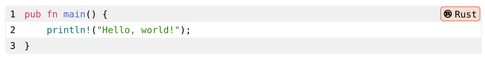
可以看到相比原始的 代码 块，codly的代码块样式好看不少，而且增加了语言类型和行号的显示。
codly()完整定义
codly( Typst code
enabled: true, // 是否禁用codly
offset: 0, // 行号偏移，可以理解为起始行号
offset-from: none, // 从指定的代码块进行行号偏移
range: none, // 显示的行号范围，如(2,4)
ranges: (), // 显示的多个行号范围，如((2,2),(4,4))
languages: (:), // 语言设定，包括显示名称、图标和颜色
radius: 0.32em, // 代码块边框的圆角度数
inset: 0.32em, // 每行的内边距
fill: none, // 代码块背景
zebra-fill: luma(240), // 间隔填充色
stroke: 1pt + luma(240), // 代码块边框的边线样式
// ----------------- 语言名称框样式 -----------------
display-name: true, // 是否显示语言的名称
display-icon: true, // 是否显示语言的图标
default-color: rgb("#283593"), // 语言名称背景色
lang-inset: 0.32em,
lang-outset: (x: 0.32em, y: 0pt),
lang-radius: 0.32em,
lang-stroke: (lang) => lang.color + 0.5pt,
lang-fill: (lang) => lang.color.lighten(80%),
lang-format: codly.default-language-block,
// ----------------- 行号样式 -----------------
number-format: (number) => [ #number ],
number-align: left + horizon,
number-placement: "outside",
smart-indent: false, // 智能缩进
smart-skip: true, // 智能省略
annotations: none,
annotation-format: numbering.with("(1)"),
// ----------------- 高亮样式 -----------------
highlights: none,
highlight-radius: 0.32em,
highlight-fill: (color) => color.lighten(80%),
highlight-stroke: (color) => 0.5pt + color,
highlight-inset: 0.32em,
highlight-outset: 0pt,
highlight-clip: true,
reference-by: line,
reference-sep: "-",
reference-number-format: numbering.with("1"),
// ----------------- 页头 -----------------
header: none, // 顶部显示额外行，需要设定为内容块
header-repeat: false,
header-transform: (x) => x,
header-cell-args: (),
// ----------------- 页脚 -----------------
footer: none, // 底部显示额外行，需要设定为内容块
footer-repeat: false,
footer-transform: (x) => x,
footer-cell-args: (),
breakable: false, // 是否能在换页时智能拆分
)
禁用和启用
可以使用codly-disable() 函数 暂时禁用codly，用codly-enable()函数再次启用codly。
#codly-disable() // 暂时禁用codly
```typ
Example
*Hello, World!*
```
#codly-enable() // 再次启用codly
```typ
Example
*Hello, World!*
```
效果如下：
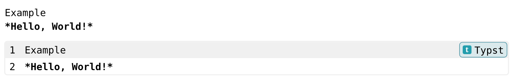
或者，你可以使用 no-codly() 函数在局部实现相同的禁用效果：
#no-codly[
```typ
Example
*Hello, World!*
]
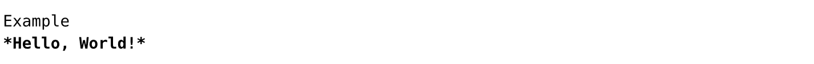
显示header和footer
#codly(
header: [这里是header],
footer: [这里是footer],
) // 不显示行号
```py
def fib(n):
if n <= 1:
return n
else:
return fib(n - 1) + fib(n - 2)
print
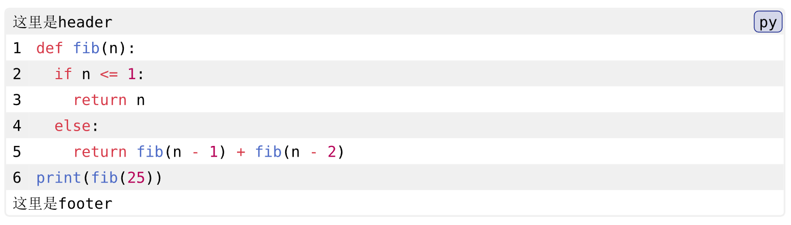
智能缩进
默认情况下，Codly 启用了智能缩进 ，这意味着 Codly 将自动 检测 代码块的缩进并相应地调整换行时的水平偏移量。可以使用 smart-indent 参数禁用此功能。
#codly(smart-indent: false)
智能省略
#codly(
smart-skip: true,
ranges: ((2,2),(4,4))
) // 不显示行号
```py
def fib(n):
if n <= 1:
return n
else:
return fib(n - 1) + fib(n - 2)
print(fib(25))
```
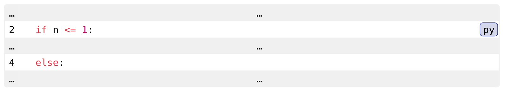
设置语言选项
#codly(
languages: (
py:( // 具体的语言
name:[Python], // 显示名称
color:green, // 背景和边框基础色
icon:"🐍" // 语言图标
)
)
) // 不显示行号
```py
def fib(n):
if n <= 1:
return n
else:
return fib(n - 1) + fib(n - 2)
print(fib(25))
```
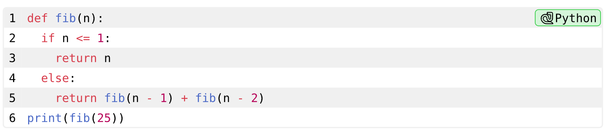
codly-lang包包含了许多语言的预定义设置，使用起来非常方便。自2024年11月19日起，该包已被codly的作者正式认可。
#import "@preview/codly-languages:0.1.7": * // 导入codly配套包codly-languages
#codly(
languages: codly-languages // 使用codly-languages包的设定
) // 不显示行号
```py
def fib(n):
if n <= 1:
return n
else:
return fib(n - 1) + fib(n - 2)
print(fib(25))
```
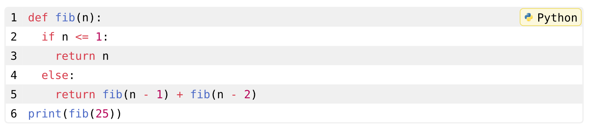
引用代码块
Codly 提供了广泛的功能来引用代码块、线条、高亮和注释。这是通过以下方式完成的：
- 行速记
@<label>：<line> - 高亮显示或批注标签
@<highlight>
#set text(lang: "zh")
#figure(
caption: "样例代码"
)[
```typ
Example
*Hello, World!*
```
]<my-label>
我可以引用我的代码块 @my-label,或者引用它的某行 @my-label:2。
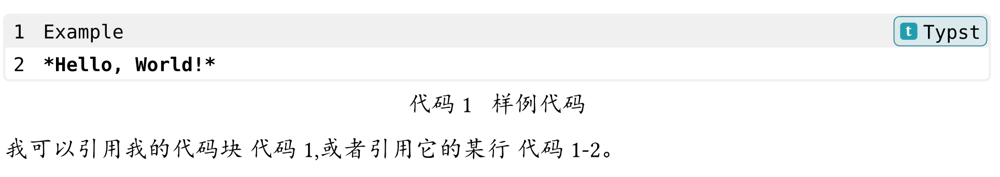
设置行号偏移量
如果你想向代码块添加偏移量，但不选择行的子集，你可以使用 codly-offset 函数：
````typ
#codly(offset:5)
```typ
Example
*Hello, World!*
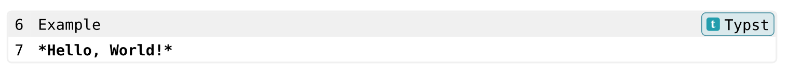
设置相对于另一个代码块的行号偏移量
通过 offset-from 参数并为 “parent” 代码块指定 Typst 标签来完成的：
```py
def fib(n):
if n <= 1:
return n
return fib(n - l) + fib(n - 2)
```<fib-fn> // 设定代码块的标签
在另一个代码块显示第5行
#codly(offset-from:<fib-fn>) // 基于指定标签的代码块进行行数偏移
```py
fib(25)
```
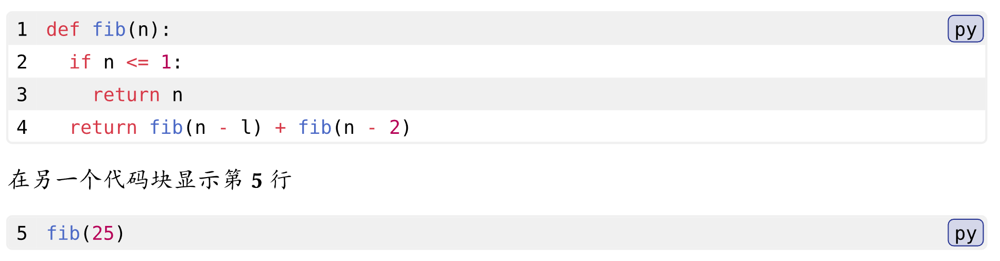
选择行的子集
如果要选择行的子集，可以使用 codly-range 函数。通过将 start 设置为 1 并将 end 设置为 none，可以选择从代码块的开头到结尾的所有行。
````py
#codly-range(2, end: 2) // 只显示第二行
```py
def fib(n):
if n <= 1:
return n
return fib(n - l) + fib(n - 2)
fib(25)
```
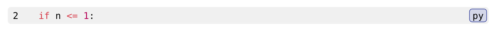
#codly-range(2, end: none) // 第二行直到末尾
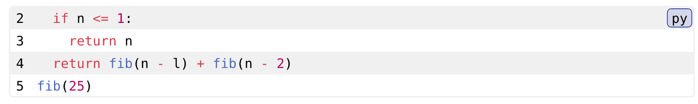
添加 “skip”
您可以使用 skips 参数在行之间添加假的跳过：
#codly(skips: ((5, 32))) // 从第5行开始，跳过32行（也就是跳到37行）
```py
def fib(n):
if n <= 1:
return n
return fib(n - l) + fib(n - 2)
fib(25)
```
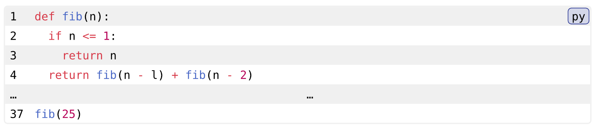
块中的代码将是相同的（除了添加的行包含 …字符），但行号将进行调整以反映跳过。
这可以使用 skip-line 和 skip-number 进行自定义，以自定义它的外观。
添加 高亮显示
您可以使用 highlights 参数高亮显示行或行的指定部分：
#codly(highlights: (
(line: 4, start: 2, end: none, fill: red),
(line: 5, start: 13, end: 19, fill: green, tag: "(a)"),
(line: 5, start: 26, fill: blue, tag: "(b)"),
))
```py
def fib(n):
if n <= 1:
return n
else:
return fib(n - 1) + fib(n - 2)
print(fib(25))
```
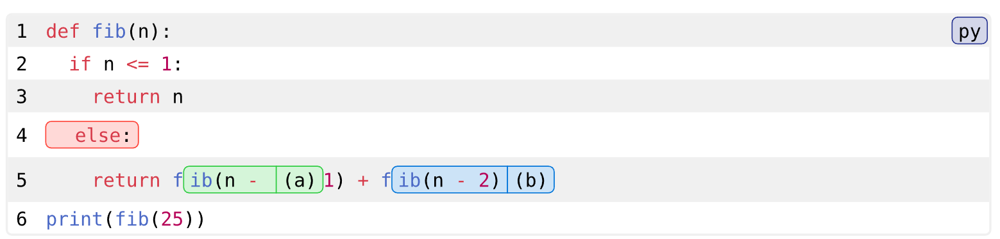
添加注解
您可以使用 annotations 参数为行或多行创建侧边注解：
#codly(
annotations: (
(start: 2,end: 5,
content: block(width: 5em,[函数体])
),
(start: 6,end: 6,
content: block(width: 2em,[调用])
),
)
)
```py
def fib(n):
if n <= 1:
return n
else:
return fib(n - 1) + fib(n - 2)
print(fib(25))
```
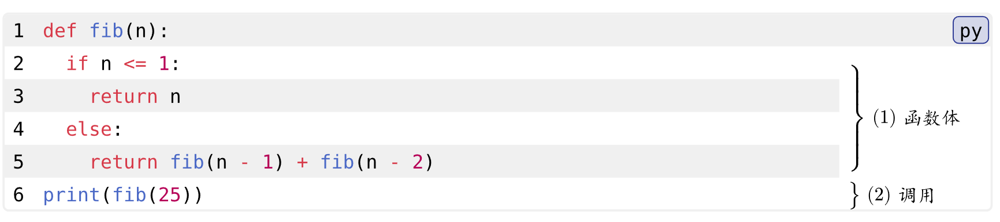
其他设定
#codly(
number-format: none, // 不显示行号
zebra-fill: none, // 不显示间隔填充
stroke: 1pt + red, // 设定边线样式
display-icon: false // 不显示语言图标
) // 不显示行号
```py
def fib(n):
if n <= 1:
return n
else:
return fib(n - 1) + fib(n - 2)
print(fib(25))
```
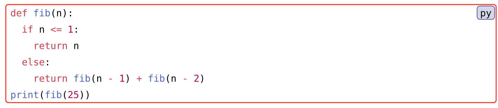